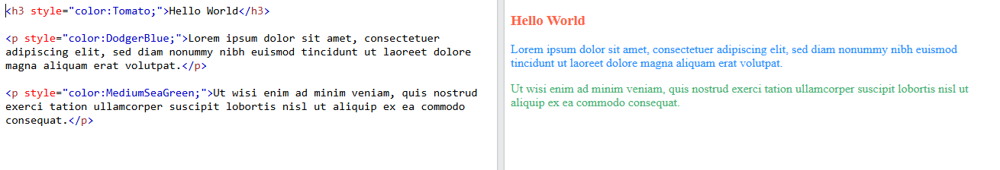
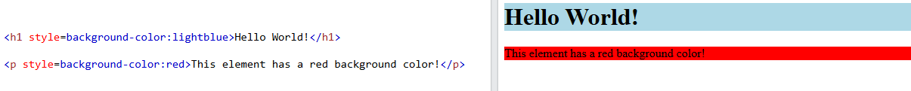
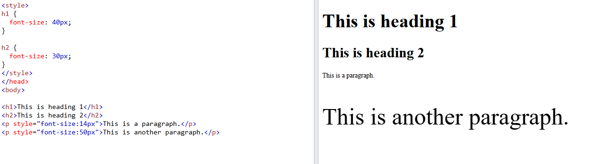
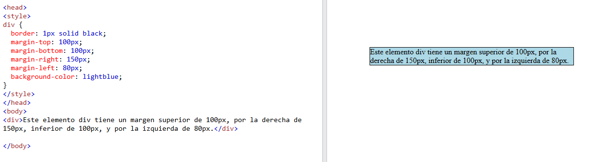
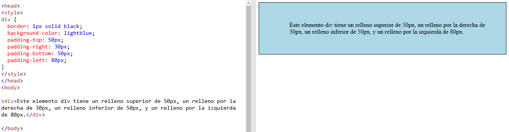

CSS stands for 'Cascading Style Sheets' and is the language we use to style an HTML document. CSS describes how HTML elements should be displayed. It is closely related to the attribute style.
If you prefer Download a PDF version
Let's see some CSS properties examples:
It is used to set the color of text. The way to use it is with style="color:color name or hex code" inside the tag we want to use it with.
Colored text example:
Learn more about this in the section Colors in CSS from w3schools.
Backgrounds properties in CSS are used to apply background effects to the elements. Most common are style="background-color:color" to give background color to an element, or style="background-image:url" pto set an image as background in an element.
Let's see an example of background color:
Learn more about this in the section Backgrounds in CSS from w3schools.
With this property we define the size of the font for an element or for a group of elements. its used with style="font-size:% o Xpx" for an specific element or with element {font-size:% o Xpx} in the head of a document to give the same font size to all the same elements from a group.
Learn more about this in the section Font size in CSS from w3schools.
Margins are used to create space around elements, outside of any defined borders. It has properties to specify the margin to every side of an element:
All of this properties can have the values of auto: the browser calculates the margins, length: specifies a margin in px, %: specifies a margin in % of the width of the containing element or inherit: specifies that the margin should be inherited from the parent element. Let's see an example:
Learn more about this in the section Margins in CSS from w3schools.
Padding is used to create space around an element's content, inside of any defined borders. It has properties to specify the padding to every side of an element:
All of this properties can have the values of length: specifies a margin in px, %: specifies a margin in % of the width of the containing element or inherit: specifies that the margin should be inherited from the parent element. Let's see an example:
Learn more about this in the section Padding in CSS from w3schools.